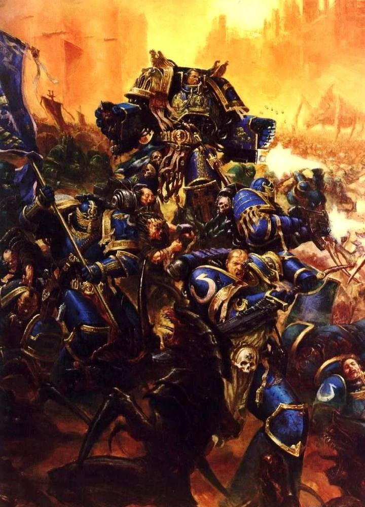

Battle of Macragge
| Battle of Macragge | |
|---|---|
| Final battle of the First Tyrannic War | |
 Terminators of the First Company in the lower Penitorium, from a plate in the Ultramarines' Liber Victorum Artwork © Games Workshop | |
| Date | 745.M41 |
| Location | Macragge and the Macragge system, Realm of Ultramar, Ultima Segmentum; the Battle of Circe at the edge of the system |
| Result | Imperial victory at great cost. Hive Fleet Behemoth destroyed as a unified force; splinter fleets survive. The First Company of the Ultramarines annihilated |
| Belligerents | |
| Commanders and leaders | |
| † Killed in action | |
| Units involved | |
| Strength | |
| Casualties and losses | |
| The world of Prandium consumed[l] | |
The Battle of Macragge was fought in 745.M41 between the Ultramarines and the tendrils of Hive Fleet Behemoth, the first full hive fleet of the Tyranids that the Imperium met, in the system of the Chapter's homeworld, Macragge. It was the climax of the First Tyrannic War. The Ultramarines, under their Chapter Master Marneus Calgar, held the world's polar fortresses against the swarm on the ground and destroyed the fleet at Circe in the void. It was the severest test of the Chapter since the Horus Heresy, and it cost the Chapter its entire First Company.[2][3]
The victory did not end the Tyranid threat. Behemoth's survivors split into smaller fleets that grew again by feeding on the worlds they found, and the Hive Mind had learned a great deal about the Imperium's methods. It would return in the Second Tyrannic War, beginning in 992.M41, with Hive Fleet Kraken and later with Hive Fleet Leviathan. At Macragge, though, the Imperium had shown that a hive fleet could be stopped, and the Chapter drew from the battle a doctrine it has used against every hive fleet since.[3]
Background
[edit]The Ultramarines and Ultramar
[edit]The Ultramarines are the successors of the XIII Legion, and Macragge is their home, the capital of the Realm of Ultramar, a cluster of some five hundred worlds the primarch Roboute Guilliman ruled before the Heresy. In the ten millennia since he was wounded by Fulgrim the Chapter has defended Ultramar against Orks, rebels, the T'au and Necron raiders. The Chapter's stronghold, the Fortress of Hera, stands on Macragge. Its principal defences include two polar fortresses, the northern and southern, which command the planet's orbital approaches with laser silos and missile batteries.[2]
Tyran Primus and the warning
[edit]The first full encounter between the Imperium and a hive fleet came at the research station on Tyran Primus, a small Mechanicus outpost on the eastern fringe. The Tyranids stripped the world of all life before help could arrive. The Ordo Xenos sent Inquisitor Fidus Kryptman to investigate, and he arrived too late to save anything. The Mechanicus adepts who went with him found a data-codex hidden by Magos Varnak in a bore shaft three kilometres beneath the surface, in which he had recorded what he had learned of the attackers before the station fell.[4]
From the codex and the trail of dead worlds he followed, Kryptman concluded that the Imperium was facing a vast, hungry and coordinated alien fleet. He named it Behemoth, following the custom of naming alien invaders for great beasts of Terran myth. Behemoth then devoured the observatory moon of Occulus, defeated the Ork fleet of the Star Krumpas at Jagga, and took the world of Thandros, whose telepathica matrix was found with its defence lasers burned out. The fleet also destroyed the fortress world of Sybari, the stronghold of the Death Shadows, a Renegade Chapter. Two minor tendrils that approached the tomb world of Solemnace avoided it, and, finding no suitable prey, went dormant.[4]
Kryptman reached the ruins of Thandros and with great effort sent an astropathic warning through the shadow of the fleet in the Warp. A single voice replied from Macragge. Kryptman reached Ultramar ahead of the fleet and was received by Calgar under the portico of his palace.[4]
The first defence
[edit]Prandium and Calth
[edit]Calgar's first plan followed the Codex Astartes. The Ultramarine fleet was deployed to stop Behemoth at the garden world of Prandium, the Jewel of Ultramar, whose gardens and forests were reckoned a wonder of the Imperium. It was a slaughter. The Codex prescribes mobile warfare and harrying actions, and the Tyranids' spore cysts and tentacles ruptured the Thunderhawks and other craft that attacked at short range, which was the only range at which the Imperial weapons were effective. The fleet could do nothing, and Prandium was consumed. A smaller swarm seeded by the hive fleet then struck Calth.[2]
Calgar withdrew to meditate. For a solar week he took neither food nor water, and when he emerged he told the Chapter that it had been guilty of the sin of pride. The Codex was written for the Space Marines, and the Space Marines had not been made for the Codex. Against the Tyranids they would have to abandon their habit of harrying actions and choose a place to defend with concentrated firepower. He chose the Fortress of Hera on Macragge, the heart of Ultramar.[2]
Preparations
[edit]Calgar improved the defences of Macragge for several solar weeks. A dozen warships already lay in orbit, and more arrived each day: strike cruisers, Navy destroyers and the Chapter's Battle Barges. Orbital defence stations were readied. On the ground he divided his forces into three armies: two to hold the polar fortresses, composed largely of the First Company's veterans and the Ultramaran Planetary Defence Forces, and a third under his own command to fight a delaying action and kill the synapse creatures that directed the swarm. Titans of the Legio Praetor stood on the ice fields before the northern fortress.[2]
The battle
[edit]The fight on the ground
[edit]Within solar weeks the outriders of the fleet attacked, and the bio-vessels swept aside the Ultramarines' strike cruisers and swarmed over the planet. Mycetic Spores landed thousands of creatures that spread across the surface. Calgar's army fought a long rearguard action and bought time at the price of blood for the polar fortresses. When Genestealers came up from the sewers beneath the Sirocco Starport, the Chapter lost much of its shuttle fleet and the Auxilia forces that made up the bulk of its defence.[2]

At Cold Steel Ridge, Calgar chose to stand. The Hive Mind had by then learned him, and sent against him a new bioform, a Hive Tyrant whose cunning matched that of a commander. The Imperial records name it the Swarmlord. Its plan used the whole range of Tyranid forms: Raveners and Trygons erupted from the frozen ground in the middle of the trenches, cutting off the defenders from the main force, and Carnifexes destroyed the Baneblade Pride of Hera, which had been left without infantry support, and with it the Imperial western flank. Hormagaunts that had been lying still among the dead rose at the Swarmlord's will to fall on the Ultramarines from the side. Calgar, who had tried to meet the Swarmlord himself, was struck down and badly wounded. His Honour Guard drove the creature off, and Brother Aloysius, the commander of the Guard, held the Swarmlord and its Tyrant Guard alone while Thunderhawks landed and took off with the survivors. Aloysius fell, but Calgar lived.[2]

The polar fortresses
[edit]The army of Ultramar was gone, and the polar fortresses stood alone. The Tyranid fleet, having defeated the orbital defences, released thousands of spores directly over them. The veterans of the First Company and the Auxilia held every wall and trench until it was overrun, then fell back through the fortress step by step. The Titans of the Legio Praetor killed Tyranids by the thousand and were dragged down by the weight of the swarm. At the northern fortress the Tyranids climbed the walls using heaps of their own dead. Defenders' gun barrels glowed red and jammed in the cold, and the ammunition that had been intended to last months of siege ran low.[2]
The war in space
[edit]The fight in orbit went no better. The first wave of the Tyranid fleet destroyed the Battle Barge Caesar. The third wave, which included swarms of Void Fiends that came through the gap, destroyed most of Ultramar's merchant fleet, and by the ninth the Starnova stations of Macragge were wrecks. After the twelfth wave the orbital defences were gone. Calgar, who had returned to the Battle Barge Octavius and would accept only the medical care that kept him on his feet, took command of what remained of the fleet and harried the Tyranids as they spread to surround the world.[2]

The Hive Mind withdrew its ships to lure the defenders from the world, and Calgar followed them toward the ringed world of Circe at the edge of the system. This was part of his own plan. The Imperial Navy's Battlefleet Tempestus, from Bakka, arrived at that moment and caught the Tyranid fleet between two fleets. Even so, the Imperial ships were outnumbered. The battleship Dominus Astra, flagship of Battlefleet Tempestus, rammed into the heart of the hive fleet and detonated her warp drives. The resulting vortex dragged her and the greater part of the Tyranid fleet into the Warp. A few battered ships slipped away.[2][4]
Kryptman had in the meantime found a weakness in the fleet. When a major bio-ship was destroyed, the nearby ones became unable to coordinate until another arrived to take its place. The Ultramarines exploited this at a high price in ships.[4]
The last stand of the First Company
[edit]The battle was won at Circe, but the world was not yet safe. When the fleet returned to Macragge, the Third and Seventh Companies landed at the poles by Drop Pod and Thunderhawk. The Seventh found the southern fortress held, and joined the survivors to clear its lower tunnels. The Third landed in the north and was attacked at once. Captain Fabian waited for the company's three Dreadnoughts before he led his Space Marines through corridors that were already changing, dripping with mucus and filled with the Tyranid smell, where Lictors lay in ambush among the dead. The company burned its way forward with flamers until it reached the lower Penitorium, where the last Terminators of the First Company had made their stand. Tyranid dead lay six deep about the doors. Inside, a circle of Terminators lay where they had fought, back to back. The First Company had been destroyed to the last man.[2]
The body of a Hive Tyrant believed to be the Swarmlord lay on the ice field outside the northern fortress, but the damage to it made identification impossible. Rumours that it survived were later proved correct.[2]
Aftermath
[edit]The Tyrannic War Veterans
[edit]The Chapter needed a century to recover. Its names of the fallen are read each year at the Feast of Days. The task of rebuilding the First Company was given to the Chaplain Ortan Cassius, whose hatred of the Tyranids was boundless. He petitioned Calgar to raise a new body of veterans drawn from those who had survived the Tyranids on Macragge, on the principle that only the tested could understand the enemy. Calgar agreed, and for the first time in its history the Chapter altered the dictates of the Codex Astartes. The Tyrannic War Veterans, who wear upgraded armour and receive additional duties, form the core of the reconstituted First Company. Calgar tolerated the departure from the Codex because he expected that the Ultramarines and the Tyranids would fight again.[2]
The splinter fleets
[edit]Behemoth was not finished. Kryptman learned that the hive fleet had been in two parts, leapfrogging each other as they fed, and Macragge had destroyed only one. The survivors split into smaller fleets that scattered in all directions, grew by consuming biomass, and appeared in many parts of the galaxy for solar decades. The Ultramarines found a Carnifex that the Imperium called Old One Eye, which had been left on Ultramar, and it was a long task to scour the Tyranids from Macragge. In the 41st millennium's last century it became clear that the scattered forces on the eastern fringe were the vanguard of two new fleets, Kraken and Leviathan. The Second Tyrannic War opened with Kraken in 992.M41.[3][4]
The Mechanicus drew its own conclusions. A splinter of Behemoth that attacked the world of Daugel Helix was met by Cohort Commander Alpha 9-Thyrrc, who used the codex from Tyran Primus to saturate the upper atmosphere with promethium gas from the refineries and ignited it with a neutron laser. Each wave of spores burned in the sky. The method was recorded in a data-codex on the forge world of Accatran and was soon forgotten.[4]
The Imperium's knowledge
[edit]The Imperium gained a great deal of knowledge about the Tyranids in this war. It learned what a hive fleet was, how the synapse creatures coordinated the swarm, and where they were vulnerable. The Ordo Xenos used the same knowledge to design the plan that Kryptman would later propose against the next fleet. In the Second Tyrannic War that knowledge was put to hard use.[4]
Legacy
[edit]The battle is remembered in Ultramar as a moment when its defenders were tested beyond expectation and did not despair. The Chapter Banner of Ultramar, which was not carried into battle by a full-strength Chapter for a hundred years, flew once again in force after the Chapter was rebuilt. Calgar's decision to set aside the Codex in the face of an enemy it had not anticipated is remembered in the Chapter as a lesson that the Codex serves the Chapter, and not the reverse.[2]
In the Era Indomitus the Ultramarines have faced the Tyranids again, as tendrils of Hive Fleet Leviathan have reached into the Realm of Ultramar, and the returned primarch Roboute Guilliman has taken up the defence of his realm.[1]
Timeline
[edit]| Date | Event | Theatre |
|---|---|---|
| c. 744.M41[m] | The Tyran Primus research station is stripped of all life; the Ordo Xenos sends Fidus Kryptman, who arrives too late | Tyran Primus |
| c. 744.M41[n] | Hive Fleet Behemoth devours Occulus, defeats the Ork fleet at Jagga and takes Thandros and Sybari | Segmentum Obscurus |
| c. 744.M41[o] | Kryptman's astropathic warning reaches Marneus Calgar on Macragge | Macragge |
| c. 745.M41[p] | The Ultramarine fleet is destroyed at Prandium and a swarm strikes Calth | Realm of Ultramar |
| 745.M41 | Calgar abandons the Codex Astartes tactics and chooses the Fortress of Hera as the place to defend | Macragge |
| 745.M41 | The Tyranid outriders sweep aside the strike cruisers and land spores across the planet; Genestealers strike from the sewers of the Sirocco Starport | Macragge |
| 745.M41 | At Cold Steel Ridge the Swarmlord wounds Calgar, and Brother Aloysius holds off the Tyrant Guard | Macragge |
| 745.M41 | The orbital defences fall after the twelfth wave, and the polar fortresses are overrun by spores | Macragge |
| 745.M41 | The Battle of Circe: Battlefleet Tempestus arrives and the battleship Dominus Astra destroys much of the hive fleet | Circe |
| 745.M41 | The First Company makes its last stand in the lower Penitorium of the Fortress of Hera | Macragge |
| 745.M41 | Behemoth's survivors split into splinter fleets and the attack on Macragge ends | Macragge |
| Late 745.M41 | A splinter of Behemoth is burned from the sky above Daugel Helix by a method recorded on Tyran Primus | Daugel Helix |
| 992.M41 | The Second Tyrannic War opens with Hive Fleet Kraken | Realm of Ultramar |
See also
[edit]
Notes
[edit]- ^ Marneus Calgar was Chapter Master. Saul Invictus was First Captain. Fidus Kryptman was an Inquisitor. Fabian was Captain of the Third Company. Aloysius served in the Honour Guard. Ortan Cassius was a Chaplain. Varnak was a Magos.
- ^ The Hive Mind acted through the synapse creatures of the fleet.
- ^ Estimated; a Chapter's strength is about a thousand Astartes.
- ^ Estimated; the planetary forces of Ultramar were mustered in the millions.
- ^ Estimated; the Legio's engine count is not recorded.
- ^ Estimated; the fleet from Bakka is described only as a force of ships. It included the Chapter's battle barges.
- ^ The First Company was annihilated, including First Captain Saul Invictus.
- ^ Estimated; Imperial records say only "sorely reduced".
- ^ Estimated; the merchant losses are given only as "much of" the fleet.
- ^ Most of the hive fleet's bio-ships were destroyed at Circe and Macragge.
- ^ They were killed on Macragge.
- ^ The orbital defences of Macragge were overrun before the Mycetic Spores landed.
- ^ Estimated; no record gives an exact year. The sources place these events in the months before the battle.
- ^ Estimated; no record gives an exact year. The sources place these events in the months before the battle.
- ^ Estimated; no record gives an exact year. The sources place these events in the months before the battle.
- ^ Estimated; no record gives an exact year. The sources place these events in the months before the battle.
References
[edit]- ^ a b Warhammer 40,000 Rulebook (5th Edition), pg. 129. Games Workshop. Codex: Tyranids (4th Edition), pp. 8-9. Games Workshop.
- ^ a b c d e f g h i j k l m n McNeill, Graham. The Chapter's Due (novel). Black Library. Codex: Tyranids (8th Edition), pp. 14-15. Games Workshop.
- ^ a b c Codex: Grey Knights (5th Edition), pg. 16. Games Workshop. Codex: Tyranids (5th Edition), pp. 12-15, 57. Games Workshop.
- ^ a b c d e f g h Codex: Space Marines (5th Edition), pp. 32-33, 40, 87. Games Workshop. Warhammer 40,000: Planetstrike (5th Edition), pg. 54. Games Workshop.